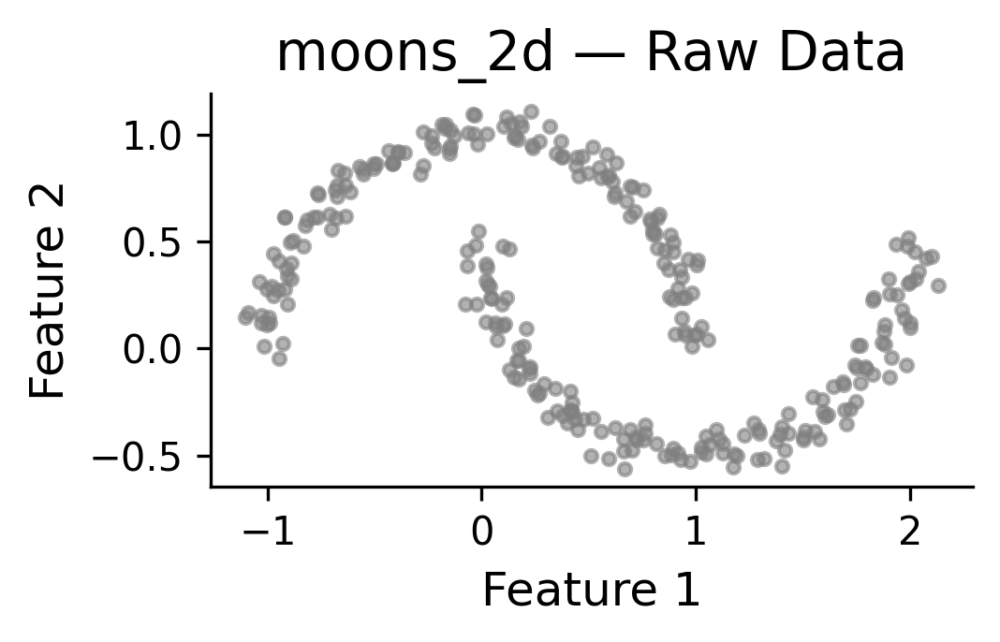
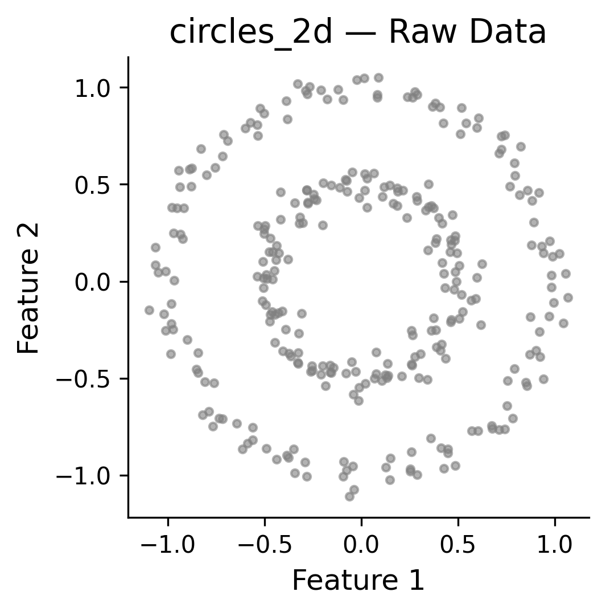
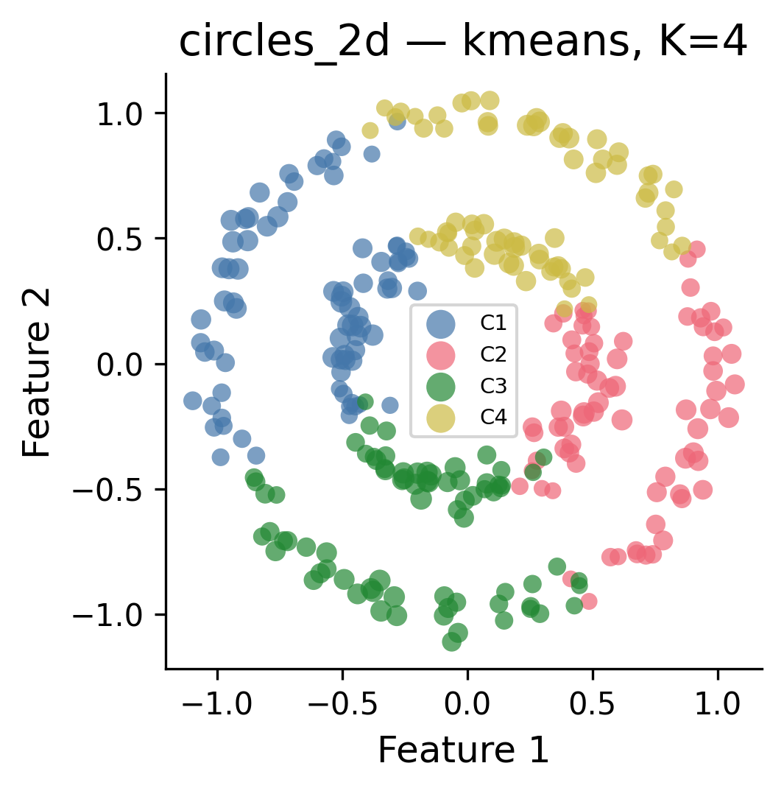
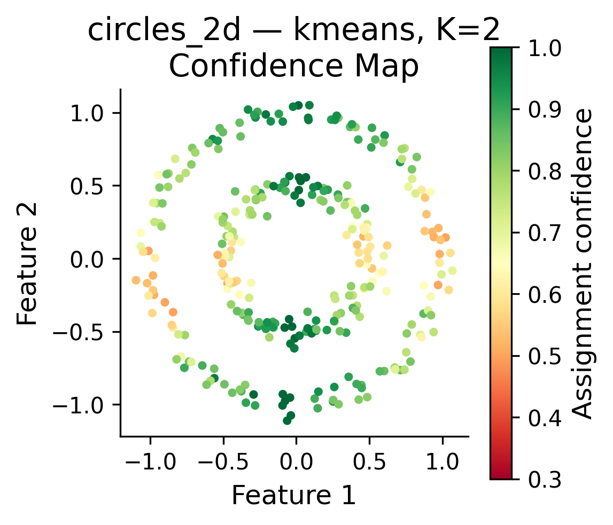
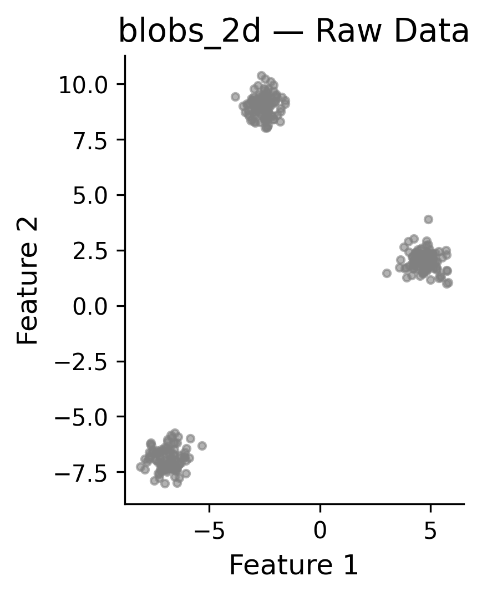
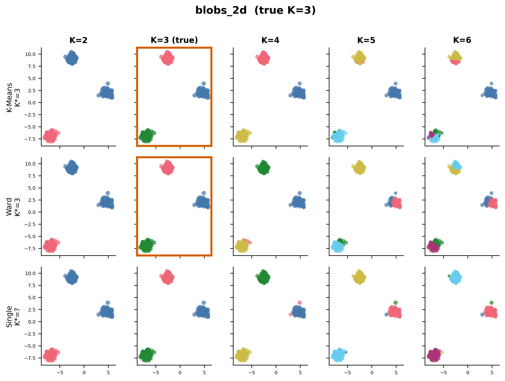
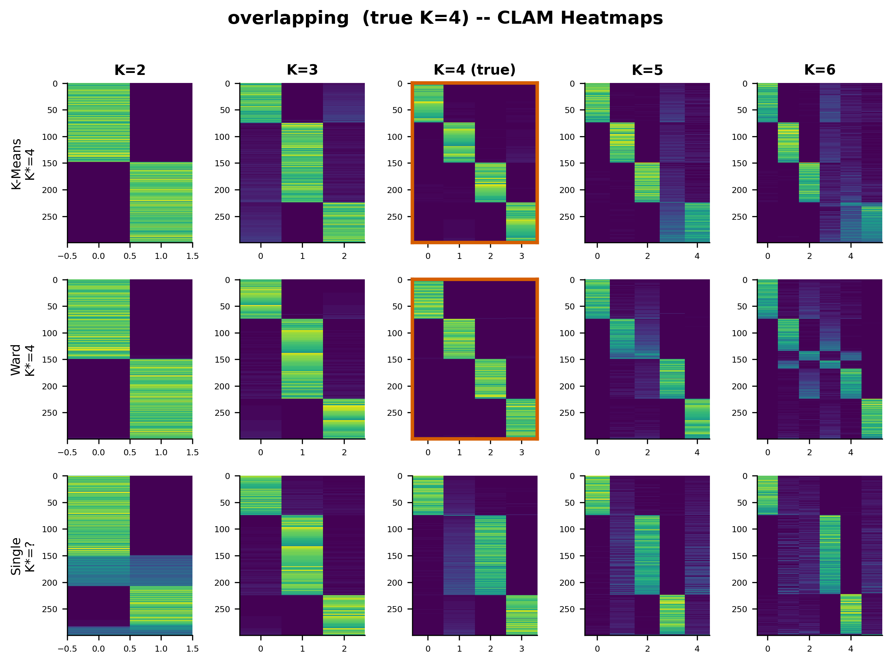
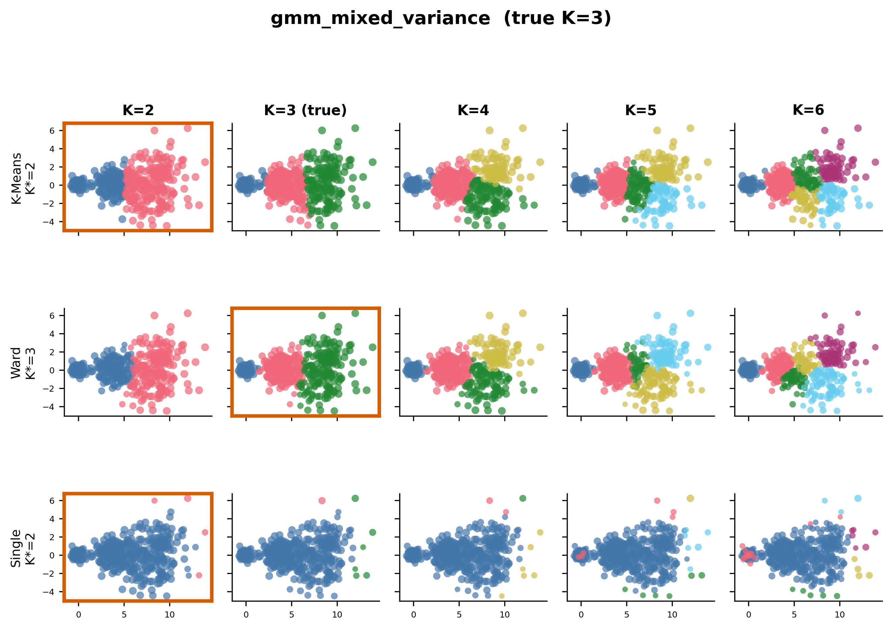
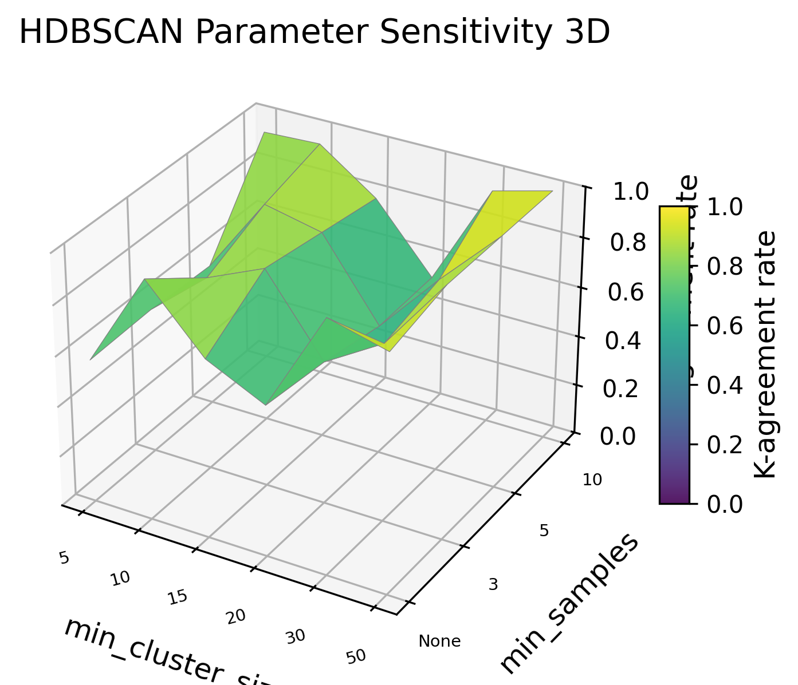

Overview
"All clusters are wrong, but some are replicable." — George Box, probably
CLAM Heatmaps
The CLAM matrix is ERICA's soul. Each row = sample, each column = cluster, each entry = how many times that sample was assigned to that cluster across 200 iterations. Sorted by primary cluster assignment.

VDX 3-gene / K-Means / K=3 (sorted)

VDX 3-gene / K-Means / K=3 (raw)

VDX 3-gene / K-Means / K=2,3,4 (multipanel)

VDX 3-gene / HDBSCAN / modal K
Stability Strips
Each horizontal bar is one sample. Segments show cluster assignment proportions. Sorted by entropy: stable samples (solid bars) at top, confused samples (mixed bars) at bottom.

VDX / K-Means / K=3

VDX / Ward / K=3
Metrics Curves
CRI, WCRI, TWCRI vs K with K* marked (left panels). ARI/AMI with error bars (right panels). Dashed lines = optimal K*.

VDX / K-Means

VDX / Ward

Well-separated blobs / K-Means

Overlapping blobs / K-Means
Method Comparison
Side-by-side: K-Means vs Ward vs HDBSCAN. HDBSCAN appears as a star at its modal K. Plus K* grouped bar charts.

VDX / Method comparison

VDX / K* per method

Well-separated / Method comparison

Overlapping / Method comparison
2D Cluster Scatter Plots
Points colored by primary cluster assignment, sized by confidence. Larger dots = more stable assignment. Only works for 2D datasets.

Moons / Raw data

Moons / Method comparison K=2

Moons / K-Means K=4 (why K* is wrong)

Moons / K-Means K=2 confidence map

Circles / Raw data

Circles / Method comparison K=2

Circles / K-Means K=4

Circles / K-Means K=2 confidence map

Blobs / Raw data

Blobs / Method comparison K=3
K Progressions (K=2 through K=6)
Rows = methods (K-Means, Ward, Single Linkage). Columns = K values. Orange borders mark K*. For 2D data: scatter plots. For high-D data: sorted CLAM heatmaps. True K marked with asterisk.

Moons (true K=2) — K-Means cuts moons in half at K=4

Circles (true K=2) — everyone struggles

Blobs 2D (true K=3) — clean diagonal at K=3

Well-separated 5D (true K=3) — CLAM heatmaps

Overlapping 5D (true K=4)

VDX breast cancer (true K=?)

Anisotropic GMM (true K=3)

Five clusters GMM (true K=5)

Mixed variance GMM (true K=3)

High-dim 50D (true K=3)
3D Surfaces & 2D Heatmaps
CLAM topography, TWCRI landscape across K and methods, HDBSCAN parameter sensitivity.

CLAM surface / VDX K-Means K=3

TWCRI landscape (2D heatmap)

TWCRI landscape (3D surface)

HDBSCAN param sensitivity (2D)

HDBSCAN param sensitivity (3D)
Gaussian Mixture Sigma Study
4 Gaussian centers in 50D. Sigma swept from 0.01 (trivially separated) to 10.0 (one big blob). How does replicability degrade?

TWCRI at K=4 vs sigma — the replicability cliff

ARI/AMI at K=4 vs sigma

K* selection across sigma levels

HDBSCAN noise fraction vs sigma

VDX vs Gaussian sigma=1.0 comparison
K Progression Grids by Sigma

sigma=0.01 — point masses, trivial

sigma=0.1 — well-separated

sigma=1.0 — overlap begins

sigma=10.0 — total collapse
Generated by ERICA plotting experiments · 80+ figures · 13 datasets · 200 MC iterations per run